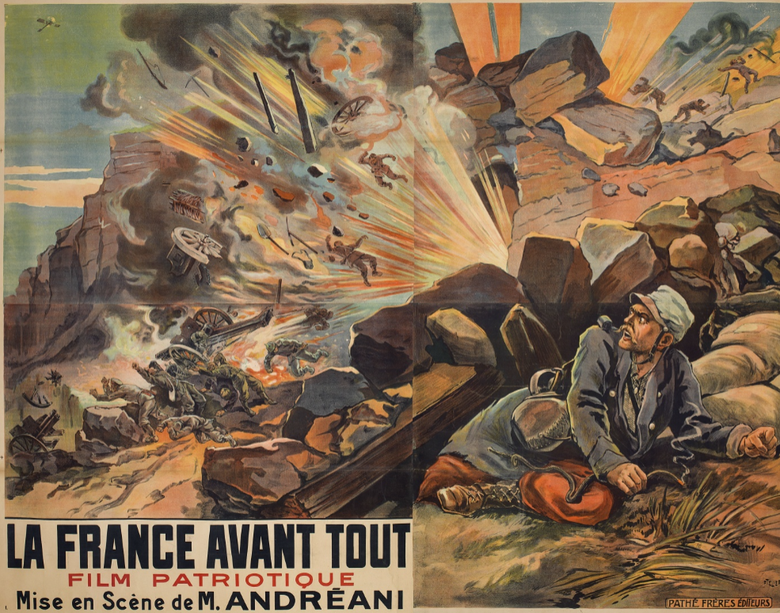
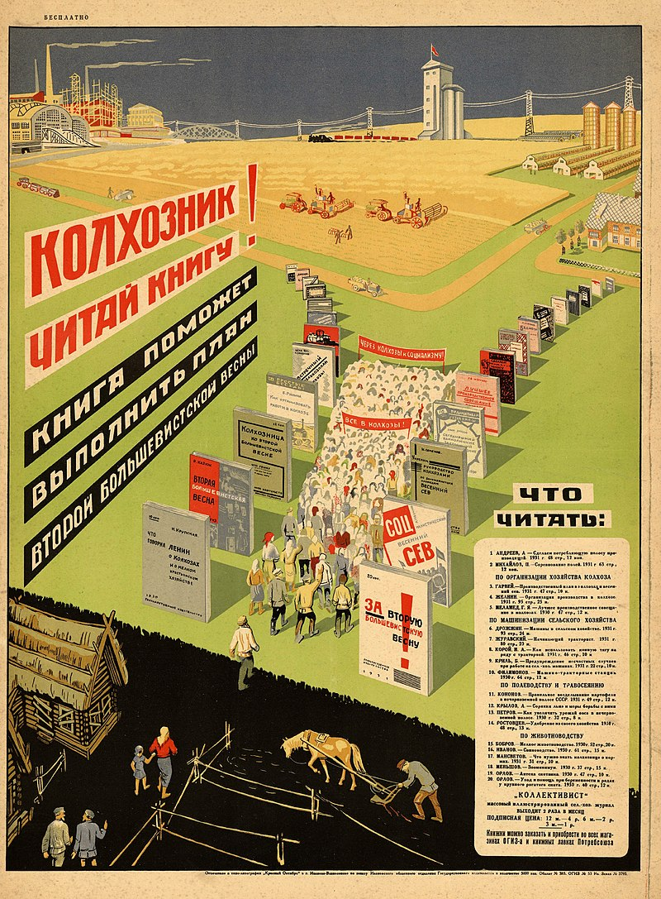
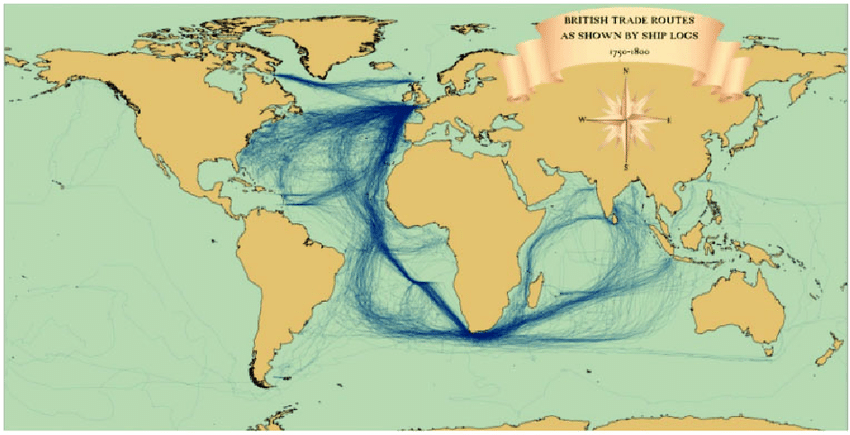

바이에른의 배신 (9) - 토지 개혁과 전쟁
게시: 2024-10-07T06:30:23+09:00
1813년 10월에 바이에른이 나폴레옹을 배신하게 된 것은 어떻게 보면 필연이라고 할 수 있습니다. 막시밀리안 1세는 물론이고, 바이에른의 친프랑스 정책을 주도했던 총리 몽겔라스조차도 나폴레옹에 대해 개인적인 충성심이나 존경심 같은 것은 전혀 없었기 때문입니다. 이들과 나폴레옹의 관계는 어디까지나 '비즈니스 관계로 만나는 사이'에 불과했기 때문에, 함께 해서 더 이상 이익이 나지 않는다면 얼마든지 헤어질 수 있는 관계였습니다. 그리고, 1813년 9월 말, 나폴레옹의 형세는 누가 봐도 전혀 비전이 보이지 않습니다. 바이에른이 달면 삼키고 쓰면 뱉는 식으로 자신과의 관계를 정리하는 것에 대해 물론 나폴레옹도 할 말이 없었습니다. 나폴레옹이야말로 바이에른이나 이탈리아, 스위스 등은 물론, 정말 나폴레옹에게 희망을 걸고 충성을 다했던 폴란드에게까지 진심으로 대한 것이 1도 없었고 어디까지나 '비즈니스적으로' 대했기 때문이었습니다. 나폴레옹이 취했던 정책의 핵심은 1810년, 이탈리아의 부왕이자 바이에른 왕정의 사위인 외젠이 나폴레옹의 무역 관련 행정 조치에 대해 보낸 항의 편지에 대한 답장에서 드러납니다. 외젠은 그 편지에서 '이탈리아산 실크를 라인연방에 수출하려고 했더니 프랑스에서 파견 나온 세관원이 허락을 하지 않는다'고 불평했는데, 그에 대한 나폴레옹의 답장은 딱 이랬습니다. "La France avant tout" (France before all, 모든 것에 대해 프랑스가 최우선이다)
("나의 원칙은 프랑스가 모든 것에 우선한다는 것이다" - 여기서 아이러니컬한 것은 나폴레옹은 코르시카인으로서 프랑스인도 아니라는 것입니다.)

(1915년의 포스터인데, WW1 당시의 애국심 고취용 짧은 선전 영상인 모양입니다. 나폴레옹의 저 말이 저 때도 재활용되었네요.) 이런 태도는 프랑스의 황제로서는 당연한 것 아니냐고 할 수 있습니다만, 그렇다면 바이에른 같은 동맹국들도 오로지 자국의 이익만을 추구하여 달면 삼키고 쓰면 뱉는 것이 당연했습니다. 하지만 바이에른과 동맹을 맺기 전부터도 나폴레옹의 태도는 처음부터 딱 그 모양이었습니다. 1805년과 1813년은 어떻게 달랐기에 바이에른의 결정이 바뀌게 된 것일까요? 물론 1812년의 러시아 원정 실패로 인해 1813년 드레스덴에서 거의 고립되다시피한 나폴레옹은 더 이상 유럽의 최강자가 아니라는 점이 가장 큰 이유였습니다. 하지만 바이에른이 앞장 서서 나폴레옹을 배신한 것은 그렇게 군사 안보적인 문제만은 아니었습니다. 일단 바이에른 귀족들은 막시밀리안과 몽겔라스가 '토지 완전사유화'(allodification)라는 개념을 통해 결과적으로 귀족들에게서 중세적인 토지 권리를 뺴앗고 세금을 걷는 것에 대해 매우 불만을 가지고 있었습니다. 현대적인 개념으로야 토지도 건물이나 금덩어리처럼 '재산'의 개념으로서, 재산에 대해 재산세를 부과하는 것이 당연합니다. 그러나 18세기말~19세기초인 당시만 해도, 토지란 귀족들의 재산이라기 보다는 중세시절부터 내려오는 귀족들의 권리에 가까왔습니다. 가령 팔츠(Pfalz) 공작이 팔츠 공작 작위는 그대로 가진 채로 팔츠 지방의 토지를 다른 사람에게 판다는 것은 상상하기 어려운 일이었습니다. 팔츠 공작 자리와 그 토지는 뗄 수 없는 것이라서, 토지를 넘긴다는 것은 공작 지위를 넘기는 것이었거든요.
(allod라는 단어는 원래 중세시대에 유래된 봉건제 관련 단어로서, 네덜란드계 고어에서 '완전한'을 뜻하는 allōd와 영지를 뜻하는 ōd에서 생겨난 말이라고 합니다. 이는 특히 중세 신성로마제국 지역에서의 완전한 토지 소유권을 뜻하는 것으로서, 이걸 가진 사람은 적어도 그 토지 안에서는 국왕이나 다름 없는 권한을 가지는 셈이었습니다. 그러니까 원래 중세에 평민이 토지 소유권을 가진다는 것은 있을 수가 없는 일이었지요. 이런 토지 기반의 주권 개념은 지금도 이어집니다. 자기 주택을 소유하지 못한 사람은 평생 집주인에게 월세 또는 은행에게 전세대출 이자를 내며 살아야 합니다. 무주택자 신세가 프랑스 대혁명 이전의 프랑스 농민 신세와 딱히 다르지 않은 것 같아 씁쓸합니다.) 몽겔라스는 프랑스 혁명의 결과 귀족들과 교회의 그런 토지를 몰수하여 평민들에게 성공적으로 판매하는 것을 보고, 비슷한 개념을 도입하여 귀족들의 토지를 '상환금'(redemption)을 주고 왕국령으로 사들이는 방식을 취했습니다. 이는 전국토의 국유화를 뜻하는 것은 아니었습니다. 가난한 바이에른 왕정에게는 그럴 만한 돈이 없었거든요. 몽겔라스는 당장 귀족들에게 줄 돈이 없었기 때문에 연금 형태로 장기 분할로 토지 상환금을 약속했고, 그런 토지 상환금은 그렇게 완전사유화된 토지를 부유한 시민계급이나 농민에게 팔아서 마련하기로 했습니다. 물론 매각 대금도 많은 경우에 장기 분할로 받기로 했지요. 이런 조치는 바이에른이 왕국을 선포한지 2년 만인 1808년 제정된 바이에른 헌법에서 '모든 중세적 관습과 특권을 폐지한다'는 조항을 넣으면서 법제화 되었습니다. 몽겔라스가 이런 복잡한 방식을 통해서라도 귀족들로부터 토지를 빼앗아 평민들에게 넘겨준 것은 두 가지 이유에서였습니다. 첫번째 이유는 그래야 농업 생산량이 늘어난다는 믿음에서였습니다. 중세적인 권리와 의무로 묶인 소작농들의 생산성은 아무래도 자기 땅을 경작하는 자작농보다 떨어질 수 밖에 없었거든요. 두 번째 이유는 역시나 세금이었습니다. 토지를 가진 평민들은 과거 귀족과 같은 면세 특권이 없으니까, 전국의 토지에서 세금을 거둘 수 있게 된 것이지요.

(중세 시절 유럽의 단위면적당 농업 생산량은 요즘 기준으로 볼 때 깜짝 놀랄 정도로 작았기 때문에, 농민들은 흑빵조차도 거의 먹지 못하고 거친 메밀죽으로 연명해야 했습니다. 그 이유는 종자 개량이 덜 되었고 철제 농기구 부족에 화학 비료도 없기 때문이었지만, 당시 중세 장원은 사실상 집단 농장이나 다름없었다는 점도 한 몫 했을 것입니다. 이 그림은 1930년대 소련의 집단농장 콜호스(Kolkhoz) 홍보 포스터입니다. 저런 집단농장의 결과에 대해서는 이미 잘 아실테니 생략...) 그러나 위에서 언급했다시피 이런 토지 개혁은 당연히 특권을 빼앗긴 귀족들의 반발을 불러왔습니다. 만약 토지 상환금을 제때 두둑히 받았다면 반발이 적을 수도 있었습니다. 당시 바이에른 귀족들은 전쟁으로 인해 현금이 매우 부족한 상황이라서, 그렇게라도 토지를 처분하고 돈을 마련해야 하는 상황이었거든요. 그러나 몽겔라스의 토지 개혁은 온갖 문제로 인해 제대로 돌아가지 못했습니다. 부유한 평민들에게서 장기분할로 토지 대금을 받아 그로부터 귀족들에게 상환금을 준다는 것은 언제든지 사고가 터질 수 있는 꽤 위험부담이 많은 거래였는데, 당시 국제 정세가 그다지 안정적이지 않았기 때문이었습니다. 일단 나폴레옹의 대륙봉쇄령은 바다와 멀리 떨어진 내륙국가 바이에른에게도 영향을 끼쳤습니다. 북부 독일에서 흘러들어온 영국의 공업제품과 인도, 카리브해 등지에서 영국이 가져오는 인디고 염료와 목화솜, 수은과 설탕, 커피 등의 수입 원자재는 바이에른의 농업과 공업에도 꼭 필요한 물건이었을 뿐만 아니라, 더 남쪽의 오스트리아 등지로 흘러가면서 관세 수입을 안겨주거나 중개 무역의 이익을 주던 달콤한 것들이었습니다. 당장 그런 이익이 사라진 것도 모자라, 나폴레옹은 끊임없는 전쟁을 벌이며 바이에른에게 점점 더 많은 병력과 물자, 군자금 차출을 요구했습니다. 그로 인해 바이에른의 주력 산업인 농업이 큰 타격을 받을 수 밖에 없었습니다. 농사를 지을 젊은이들과 밭을 갈 말들이 먼 전쟁터로 끌려갔고, 가뜩이나 부족한 현금을 나폴레옹은 마치 세금 걷어가듯 군자금으로 강탈해 갔습니다.

(1750년~1800년 사이 영국 무역선들의 항해 일지를 기반으로 작성한 교역 항로입니다. 대단하긴 하네요.) 물론 그런 전쟁 동원 중 결정적인 역할을 한 것은 1812년 러시아 원정이었습니다만, 1809년 오스트리아와의 전쟁은 바이에른의 결과적인 배신에 씨앗을 뿌리는 계기가 되었습니다. 1809년 오스트리아가 바이에른을 나폴레옹로부터 '해방'한답시고 쳐들어온 이 전쟁으로 인해, 바이에른 야전군 거의 전체가 그랑다르메 제7군단이라는 이름으로 편성되어 프랑스 원수인 르페브르(François Joseph Lefebvre) 원수 지휘하에 놓이게 되었습니다. 그 휘하에는 바이에른군 3개 사단이 있었는데, 그 사단장들은 각각 브레더(Karl Philipp von Wrede), 드로이(Bernhard Erasmus von Deroy), 그리고... 루드비히 왕세자였던 것입니다. 이들에겐 무슨 일이 펼쳐졌을까요? Source : The Life of Napoleon Bonaparte, by William Milligan Sloane Napoleon and the Struggle for Germany, by Leggiere, Michael V With Napoleon's Guns by Colonel Jean-Nicolas-Auguste Noël https://repository.lsu.edu/cgi/viewcontent.cgi?article=6385&context=gradschool_dissertations https://www.lesechos.fr/2004/12/leconomie-napoleonienne-ou-la-france-avant-tout-1063921 https://mx.pinterest.com/pin/338825571974342450/ https://bibliotheques-specialisees.paris.fr/ark:/73873/pf0002142097/components/annotationManager/Module_AnnotationManager/v0001 https://itsaroundyou.in/understanding-allodial-title https://www.researchgate.net/figure/British-trade-routes-as-shown-by-ship-logs-between-1750-and-1800-The-Guardian-18th_fig2_312273581